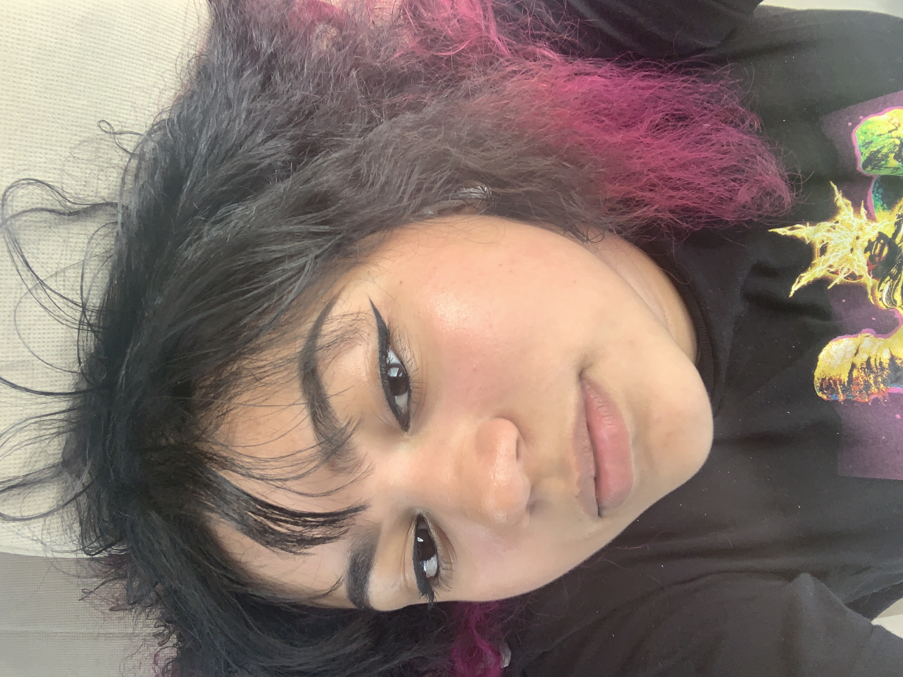

Resume
Want a copy of my resume?

Job Experience
ShopRite of English Creek - 3003 English Creek Ave, Egg Harbor Township 08234
August 2021 - Present
Front end cashier and also floor help (picking up the aisles).
Skills
WEB DESIGN
I can code in basic HTML and CSS. Self taught. Did a small course on python and java in school.
ARTISTIC SKILLS
I am able to rough sketch objects and cartoon human faces. I am currently bettering this skill. Also self taught.
VIDEO
I can manipulate videos and pictures into a satifying video with effects. Self taught.
LANGUAGES
I can understand Spanish almost perfectly. Semi-fluent in speaking, reading, and writing in Spanish. I can translate from Spanish to English and English to Spanish.
EXTRA
I am friendly towards others but I can be very quiet. I learn quickly and efficiently. When I put my mind to something, I can really do great things! I also really like helping others when I can.

Education
Attended Egg Harbor Township High School
Graduated June 2022
Atlantic Cape Community College
Freshman majoring in computer science -- present
Achievements
- Varsity scholar in 9nth, 10th, and 12th grade.
- 90 average thoughout the school year
- Seal of Biliteracy Awardee
- Passed a state exam of proficiency in Spanish language.
- High School Graduate